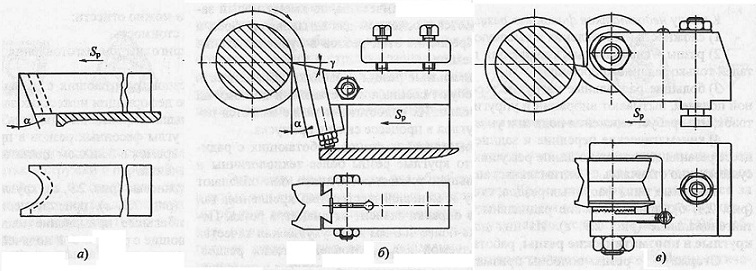

Эти резцы применяются для обработки тел вращения, имеющих наружные или внутренние фасонные поверхности. Обработка этими резцами обычно ведется на станках-автоматах и револьверных станках в условиях крупносерийного или массового типа производства. В качестве заготовок деталей чаще всего используют калиброванный прокат в виде прутка.
Стержневые фасонные резцы. Простейшим фасонным резцом является стержневой с приваренной или напаянной режущей пластинкой. Переточка по задней поверхности, то есть по всей профильной режущей кромке - сложная и трудоемкая операция, поэтому, как правило, фасонные резцы перетачивают по передней поверхности. После переточки по передней поверхности исходный профиль режущей кромки сохраняется.
Стержневой резец допускает только 3-4 переточки по передней поверхности, так как после каждой переточки, чтобы установить режущую кромку резца по центру заготовки, резец поднимают выше при помощи подкладок, и он может упереться в верх паза резцедержателя.
Малое число допускаемых переточек является недостатком стержневых резцов, их применяют, как правило, в качестве радиусных и галтельных.
Призматические фасонные резцы. Шлифованный профиль задней поверхности призматического резца соответствует заданному фасонному профилю детали. Резец крепят в специальной державке хвостовиком, имеющим форму "ласточкин хвост". Для образования заднего угла резец устанавливают под углом к подошве державки. Переточку резца осуществляют шлифованием передней поверхности.
Дисковые фасонные резцы. Такие резцы имеют фасонную наружную поверхность, форма которой является зеркальным отображением заданной фасонной поверхности детали. В резце имеется угловой вырез. Пересечением плоскости выреза с наружной фасонной поверхностью образуется фасонная режущая кромка.
Если бы передняя поверхность резца проходила через центр заготовки, а центр дискового резца находился на уровне центра заготовки, то резец имел бы нулевые значения переднего и заднего углов и следовательно практически бы не работал.
Чтобы создать работоспособную геометрию режущего клина, вырез делают ниже центра резца, а центр устанавливают выше центра заготовки. Кроме того, переднюю поверхность перетачивают по касательной к определенной условной окружности:
R = r·sin(α+γ),
где r - радиус резца,
α - заданный задний угол,
γ - заданный передний угол.
При указанных условиях установки резца значения переднего и заднего углов будут положительные.
После каждой переточки по передней поверхности дисковый резец поворачивают на оси державки, вновь устанавливают по центру и закрепляют. Имеющиеся на торце резца и на торце державки зубцы, предотвращают проворот резца от усилий, возникающих при резании.
Призматические и дисковые резцы изготавливают обычно из быстрорежущей стали, реже применяют твердосплавные.
Чтобы уменьшить вибрацию заготовок при обработке фасооным резцом на поперечной подаче, поверхность предварительно протачивают проходным резцом, оставляя небольшой припуск на окончательную обработку.
Подача обычно ручная (0,02-0,1 мм/об), с уменьшением к концу прохода. Для получения требуемой чистоты поверхности скорость резания при точении фасонными резцами не должна превышать 30 м/мин.
В качестве смазочно-охлаждающей жидкости при фасонной обработке стали применяют эмульсию или сульфофрезол.